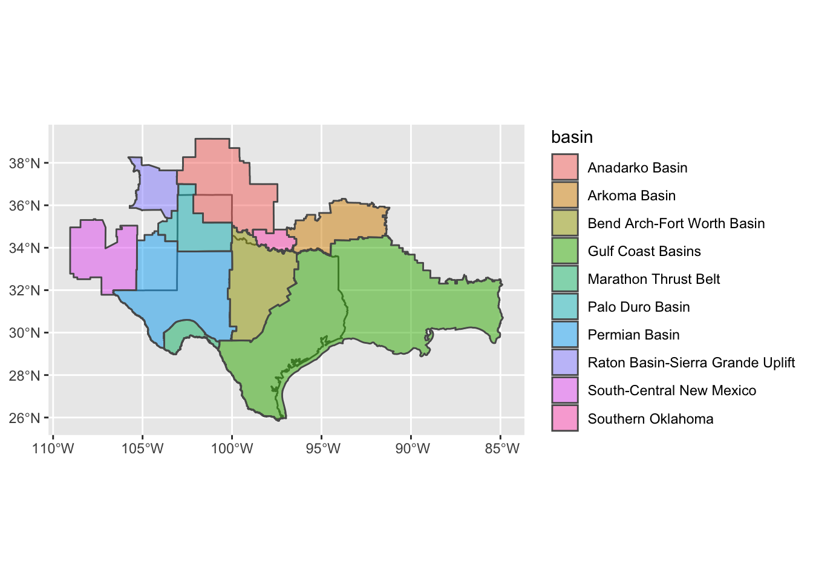
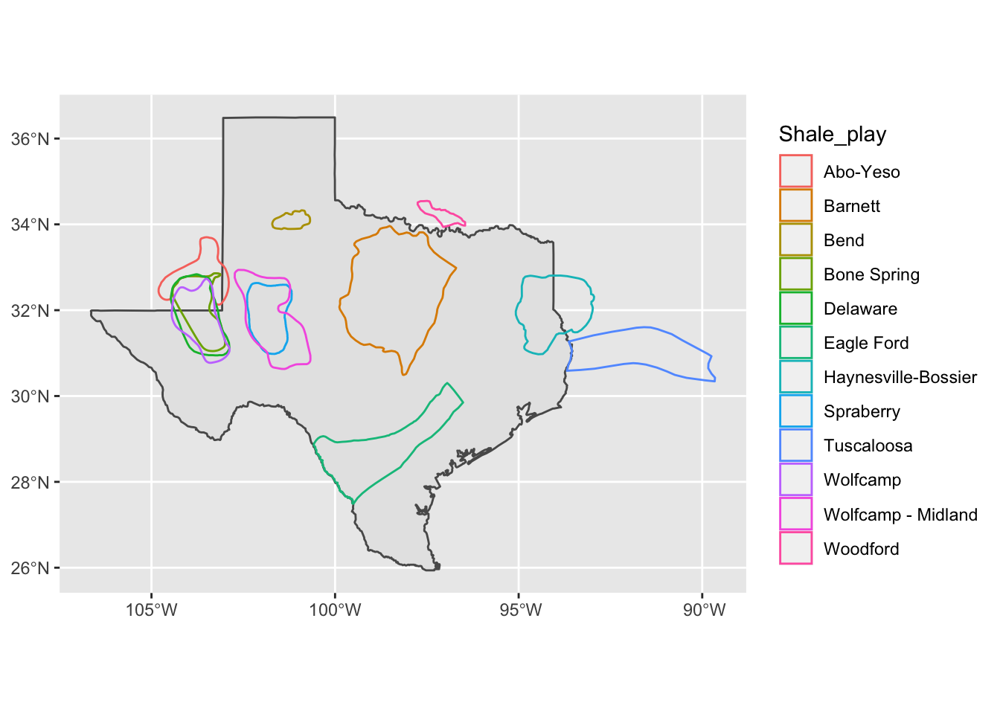
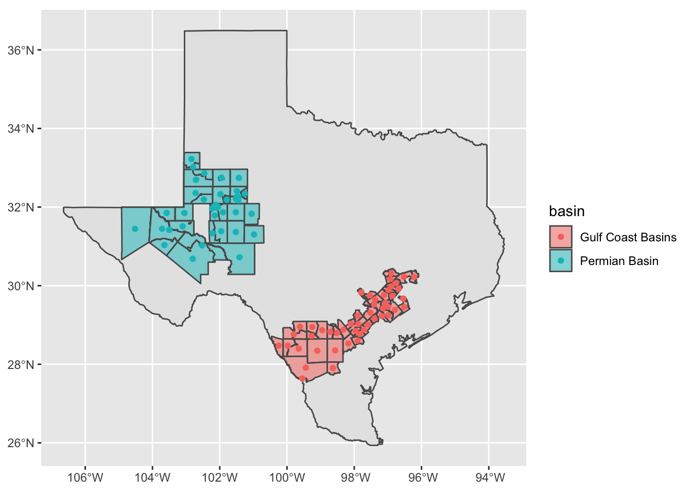
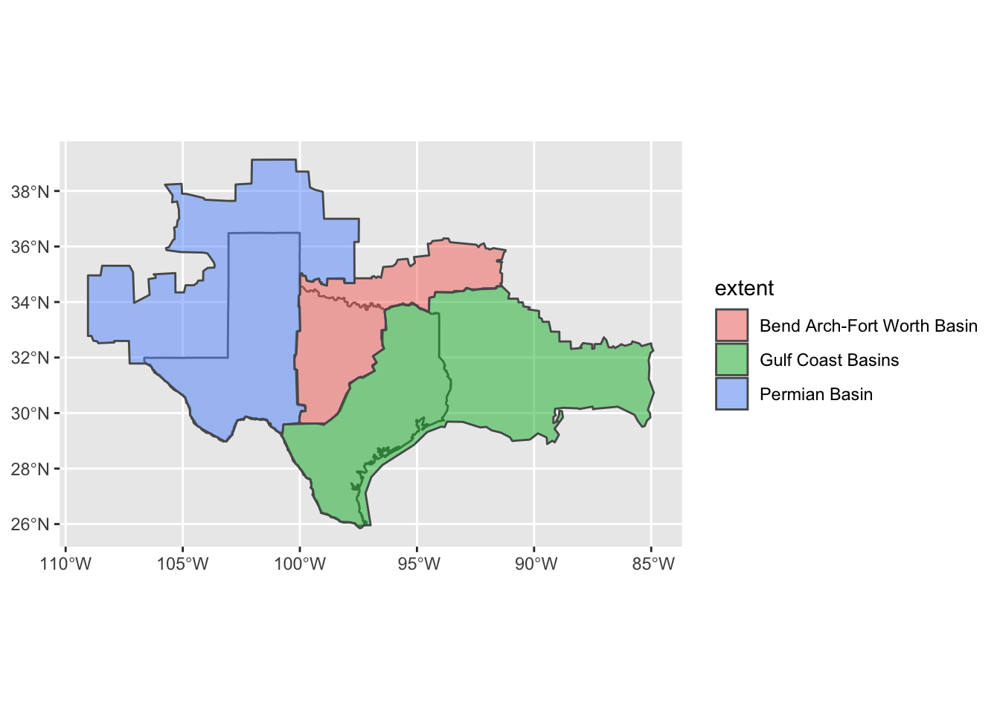
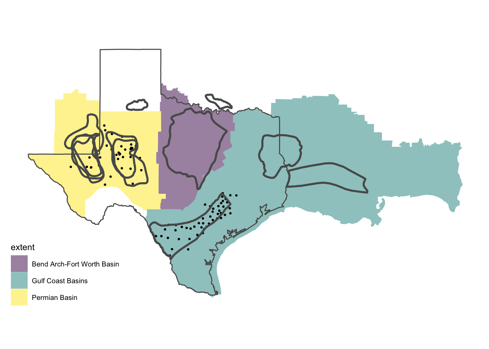

2 Preprocess data
library(tidyverse)
library(magrittr)
library(lubridate)
library(tidycensus)
library(sf)
library(maps)
library(viridis)
library(ggthemes)
#### include your census api key
#census_api_key('<your_key>', install = TRUE)#### read flares_raw data
flares_data <- read_csv("../data/input/tx-tracts-vnf-nightly.csv")
flares_data %<>%
mutate(STATEFP = as.character(STATEFP),
#COUNTYFP = as.character(COUNTYFP),
#TRACTCE = as.character(TRACTCE),
GEOID = as.character(GEOID))
#### python code to download tracts shapefile from census-tiger site
# import wget
# from zipfile import ZipFile
# import os
#
# url = 'https://www2.census.gov/geo/tiger/TIGER2016/TRACT/tl_2016_48_tract.zip'
# wget.download(url, os.path.expanduser('~/tmp'))
# file_name = os.path.expanduser('~/tmp/tl_2016_48_tract.zip')
# ZipFile(file_name, 'r').extractall(os.path.expanduser('~/tmp/tl_2016_48_tract/'))
# os.system("ls ~/tmp/tl_2016_48_tract/")
#### read administrative boundaries shapefiles
state_sf <- st_as_sf(maps::map("state", plot = FALSE, fill = TRUE)) %>%
filter(ID == "texas")
crs_ <- st_crs(state_sf)
tracts_sf <- st_read("../data/input/tl_2016_48_tract/tl_2016_48_tract.shp")## Reading layer `tl_2016_48_tract' from data source
## `/Users/audiracmichelle/GitHub/audiracmichelle/flaring_texas/data/input/tl_2016_48_tract/tl_2016_48_tract.shp'
## using driver `ESRI Shapefile'
## Simple feature collection with 5265 features and 12 fields
## Geometry type: POLYGON
## Dimension: XY
## Bounding box: xmin: -106.6456 ymin: 25.83716 xmax: -93.50804 ymax: 36.5007
## Geodetic CRS: NAD83tracts_sf <- tracts_sf %>%
dplyr::filter(STATEFP == "48") %>%
mutate(area = ALAND / 1e6) #ALAND in tiger filers is reported in sq meters
tracts_sf <- st_transform(tracts_sf, crs_)#### read National Oil and Gas Assessment Province Boundaries
basins_sf <- read_sf("../data/input/usprov12/usprov12.shp") %>%
rename(basin = PROVNAME)
#class(st_geometry(basins_sf))
basins_sf %<>%
st_transform(crs_)
index <- sapply(sf::st_intersects(basins_sf, tracts_sf), length)
index <- which(index > 0)
basins_sf <- basins_sf[index, ]
basins_sf %>%
ggplot() +
geom_sf(data = state_sf) +
geom_sf(aes(fill = basin), alpha = 0.5)
# read low permeability oil and gas play boundaries
play_bounds_sf <- read_sf("../data/input/TightOil_ShaleGas_Plays_Lower48_EIA/ShalePlays_US_EIA_Dec2021.shp")
play_bounds_sf %<>%
st_transform(crs_)
play_points_sf <- play_bounds_sf %>%
st_make_valid() %>%
st_simplify() %>%
st_cast("MULTIPOINT")
index <- sapply(sf::st_intersects(play_points_sf, tracts_sf), length)
index <- which(index > 0)
play_bounds_sf <- play_bounds_sf[index, ]
ggplot() +
geom_sf(data = state_sf) +
geom_sf(data = play_bounds_sf, aes(col = Shale_play), fill = NA)
#### get flares location (assuming they are located at tract-centroids)
#### join flares_data with basins and flares locations
flares_sf <- tracts_sf %>%
filter(GEOID %in% unique(flares_data$GEOID))
flares_points_sf <- st_centroid(flares_sf)
coords <- as_tibble(st_coordinates(flares_points_sf)) %>%
rename(Latitude = Y,
Longitude = X)
flares_sf <- bind_cols(flares_sf, coords)
index <- unlist(sf::st_intersects(flares_points_sf, basins_sf))
flares_sf$basin <- basins_sf$basin[index]
flares_points_sf$basin <- basins_sf$basin[index]
flares_data %<>%
left_join(flares_sf %>%
st_drop_geometry() %>%
select(GEOID, basin, Latitude, Longitude))
ggplot() +
geom_sf(data = state_sf) +
geom_sf(data = flares_sf, aes(fill = basin), alpha = 0.5) +
geom_sf(data = flares_points_sf, aes(col = basin))
#### assign extent regions
basins_sf$extent <- basins_sf$basin
basins_sf$extent[basins_sf$basin == "South-Central New Mexico"] <- "Permian Basin"
basins_sf$extent[basins_sf$basin == "Palo Duro Basin"] <- "Permian Basin"
basins_sf$extent[basins_sf$basin == "Raton Basin-Sierra Grande Uplift"] <- "Permian Basin"
basins_sf$extent[basins_sf$basin == "Marathon Thrust Belt"] <- "Permian Basin"
basins_sf$extent[basins_sf$basin == "Arkoma Basin"] <- "Bend Arch-Fort Worth Basin"
basins_sf$extent[basins_sf$basin == "Southern Oklahoma"] <- "Bend Arch-Fort Worth Basin"
basins_sf$extent[basins_sf$basin == "Anadarko Basin"] <- "Permian Basin"
#### join tracts_sf with basins and extent regions
intr_list <- sf::st_intersects(st_centroid(tracts_sf), basins_sf)
intr_len <- sapply(intr_list, length)
# visual inspection
# table(intr_len)
# ggplot() +
# geom_sf(data = state_sf) +
# geom_sf(data = tracts_sf[which(intr_len == 0), ], col = "blue")
intr_list[which(intr_len == 0)] <- 10
index <- unlist(intr_list); rm(intr_list)
tracts_sf$basin <- basins_sf$basin[index]
tracts_sf$extent <- basins_sf$extent[index]
basins_sf %>%
group_by(extent) %>%
summarise(geometry = st_union(geometry)) %>%
st_simplify(dTolerance = 5000) %>%
ggplot() +
geom_sf(data = state_sf) +
geom_sf(aes(fill = extent), alpha = 0.5)
basins_sf %>%
filter(basin %in% c("Permian Basin",
"Bend Arch-Fort Worth Basin",
"Gulf Coast Basins")) %>%
ggplot() +
geom_sf(aes(fill = extent), alpha = 0.5, size = 0) +
geom_sf(data = state_sf, fill = NA) +
geom_sf(data = flares_points_sf, size = 0.5) +
geom_sf(data = play_bounds_sf, fill = NA, size = 1) +
scale_fill_viridis_d() +
theme_map()
#### get tracts population
v18 <- load_variables(2018, "acs5", cache = TRUE)
# View(v18)
# Estimate!!Total
tract_acs <- get_acs(year = 2018,
geography = "tract",
variables = "B01001_001",
state = "TX",
geometry = FALSE)
tract_acs %<>%
rename(pop = estimate)
#### join tracts and population
# all shapefile GEOIDs in acs query
# sum(!tracts_sf$GEOID %in% tract_acs$GEOID)
tracts_sf %<>%
left_join(tract_acs %>%
select(GEOID, pop))
#### recover area and population from tracts and add to flares data
flares_data %<>%
left_join(
tracts_sf %>%
st_drop_geometry() %>%
select(GEOID, area, pop)
)#### disperseR input
disperser_input <- flares_data %>%
select(GEOID, date, flares, Latitude, Longitude)
start_hour_ <- lapply(1:nrow(disperser_input), function(x) seq(2, 22, 6))
disperser_input$start_hour = start_hour_
disperser_input <- unnest(disperser_input, cols = c(start_hour))
disperser_input %<>%
rename(ID = GEOID,
start_day = date,
w = flares) %>%
mutate(uID = ID,
Height = 20,
year = year(start_day),
month = month(start_day),
duration_emiss_hours = 1,
duration_run_hours = 12)#### write rds files
write_rds(flares_data, "../data/preprocessed/flares_data.rds")
write_rds(tracts_sf, "../data/preprocessed/tracts_sf.rds")
write_rds(disperser_input, "../data/jobs_input/disperser_input.rds")